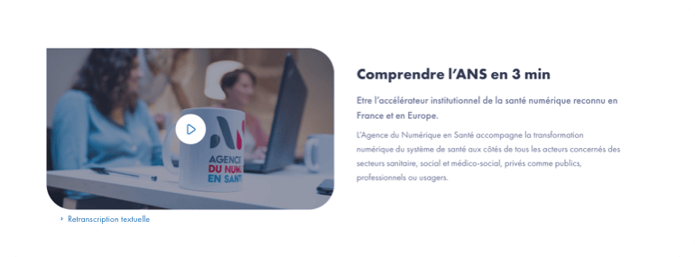
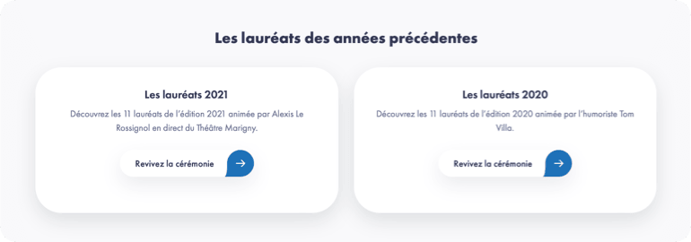
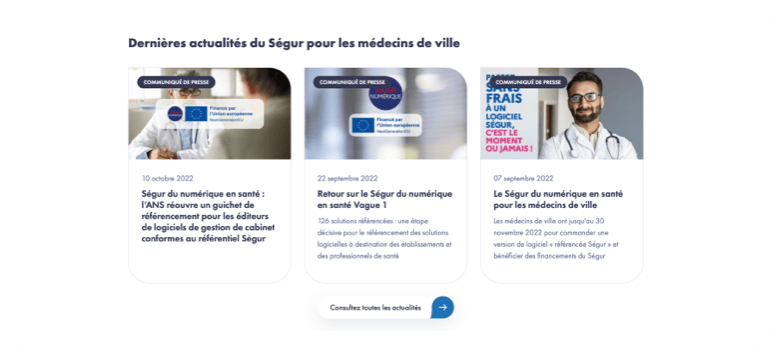
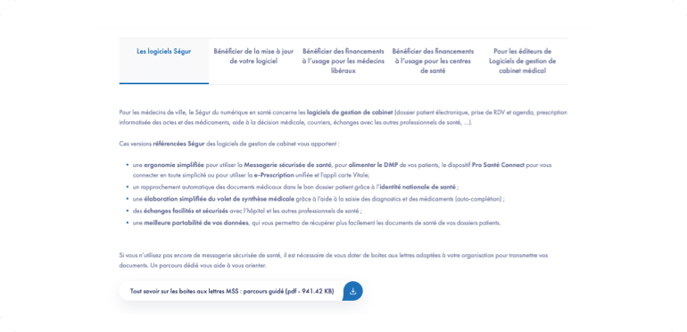
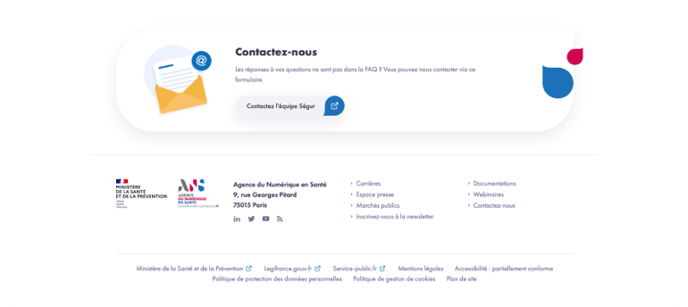
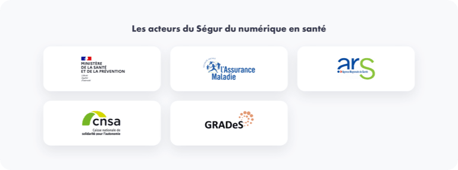
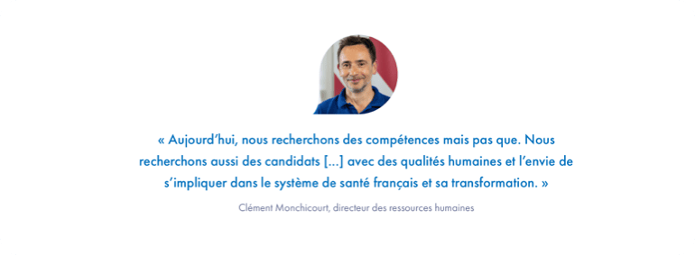
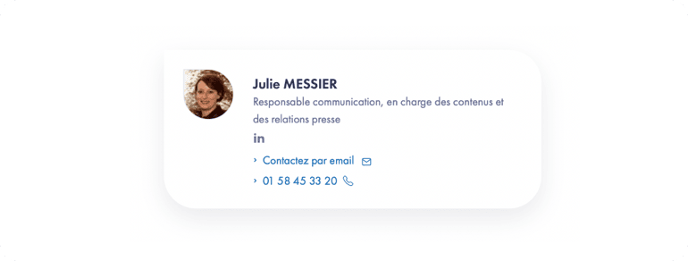

Charte éditoriale
Type de contenus & éléments
Contenus page « Article »
Du bon recours aux illustrations
Lors de la rédaction d’une publication, les questions de droits d’auteur doivent être prises en compte par les contributeurs.
Au cours de l’élaboration de la publication, des éléments artistiques (photographies, infographies, vidéos, etc.) dont le copyright appartient à des tiers peuvent être incorporés. Il est alors crucial de s’assurer d’avoir acquis tous les droits de reproduction et de diffusion nécessaires à l’utilisation de ces éléments sur tous les supports dont Internet auprès des détenteurs de ces droits (droit à l’image).
Tous les visuels et illustrations doivent être par habitude publiés avec un titre significatif et synthétique. Les illustrations complexes doivent porter une description pour des raisons d’accessibilité.
Ces descriptions ou les légendes ne doivent pas alourdir les illustrations qu’elles accompagnent, mais les expliquer d’une façon claire et concrète. Un texte court et précis sera toujours préférable.
L’énumération et la mise en évidence
Toute énumération simple est introduite par un deux-points. Chaque élément commence par une lettre minuscule et se termine par une virgule ou par un point-virgule (selon la longueur de l’élément ou la présentation de la phrase).
En français, l’italique est utilisé pour attirer l’attention du lecteur sur un mot, une phrase ou un passage que l’auteur tient à mettre en évidence, pour composer des mots étrangers à la langue courante ou pour signaler le titre complet d’un ouvrage.
A noter que dans un texte en italique, les mots à mettre en évidence sont composés en romain. La mise en évidence peut également s’effectuer à l’aide de caractères gras, mais il convient d’utiliser cette procédure avec sobriété.
Les opportunités de l’argumentation
Une webpage comme un document imprimé est composé de deux éléments à distinguer : le contenu, c’est-à-dire les chaînes de caractères associées à leur structure logique, et la présentation.
La présentation doit répondre d’une maquette harmonieuse et commune si bien que le contenu du texte doit, comme dans un livre, s’y conformer. C’est ainsi le rôle essentiel de la mise en page qui fait de chaque validation un traitement particulier dans le respect des contributeurs.
La nécessité d’utiliser les éléments graphiques est une priorité au sein de l’Agence pour atteindre une cible plus large et gagner en notoriété auprès de l’écosystème au sein duquel elle doit rayonner pour remplir ses missions.
De l’intérêt d’une bonne ponctuation
La virgule permet de séparer plusieurs membres de phrase de même nature, quand ils ne sont pas réunis par les conjonctions « et », « ou », « ni ».
Elle permet d’isoler une proposition incise, de mettre en relief des mots formant répétition ou se trouvant en apposition.
Rappelons qu’une virgule ne doit jamais séparer le sujet du verbe ni celui-ci de ses compléments. Lorsqu’il s’agit d’un « et » explétif, celui-ci est précédé d’une virgule. (Ex. : vu le règlement susmentionné, et notamment son article 10, …)
À l’intérieur du texte, le tiret peut remplacer les virgules ou les parenthèses; toutefois, on veillera à ne pas abuser de cette ponctuation (appelée «incidente») afin de ne pas casser le rythme du texte.
Lorsque l’incidente termine une phrase, le second tiret doit être supprimé.
Le point termine une phrase. On le supprime dans les titres centrés ainsi que dans tout titre ou élément qui ne constitue pas une phrase. Rappel : les points de suspension sont toujours au nombre de trois.
Le point-virgule sert à séparer les parties importantes d’une phrase non réunies par des conjonctions, surtout si ces parties contiennent déjà des virgules.
On l’utilise aussi dans les énumérations comme vu précédemment.
Du bon recours aux lettres capitales
L’historique des lettres alphabétiques définit la lettre majuscule comme une lettre plus grande que les autres, ornée ou non, marquant le début d’un chapitre, d’un paragraphe ou d’une phrase. En imprimerie, on l’appelle capitale, c’est-à-dire lettre de tête.
En règle générale, la majuscule est utilisée comme première lettre des noms propres. Un nom ou un mot écrit entièrement en majuscules est dit écrit « en lettres capitales ».
Cependant, un certain désordre règne actuellement dans l’emploi des majuscules, trop fréquemment utilisées. Il est donc recommandé de ne pas recourir à l’emploi des majuscules (hors “sur-titre” et “acronyme”), également dans le nommage des fichiers.
Privilégiez les vidéos
Le recours aux vidéos dans la partie haute de la webpage est un bon moyen d’embarquer un internaute pressé. Pour des raisons à la fois d’accessibilité et de référencement (SEO), une vidéo doit être accompagnée d’une alternative textuelle au moment de sa publication.
Même si cette contribution peut paraître loudre à mettre en place (comme elle induit un travail de retranscription écrite), elle aura un effet majeur afin de gagner en visibilité dans les navigateurs qui génèrent la moitié du trafic actuel du site et peut être largement encouragée par cette méthode de référencement à systématiser.
Le saviez-vous ?
Une vidéo associée à une présentation rapide vaut souvent mieux qu’une rédaction fastidieuse. Les supports multimedia améliorent la compréhension et sont indexés en priorité dans les navigateurs. Ils optimisent ainsi le référencement naturel en contexte de la page concernée sur les moteurs de recherche pour vous faire gagner en visibilité digitale.
Communiquer, c’est donner du sens à l’information
Contenu à jour et synthétique
Donnez envie à votre interlocuteur en lui assurant que votre information est bien à jour et synthétique.
- Date de publication : Contenu mis à jour
- Temps estimé de lecture : Contenu synthétique
Les appels à l’action ou CTA (call-to-action)
Misez sur les appels à l’action ou CTA (call-to-action) pour réduire le taux de rebond et encourager l’internaute à s’informer davantage sur le site.
Jouez sur les différents niveaux de lecture
Suscitez la curiosité et donnez l’envie de s'informer
Allez au cœur du sujet, progressivement
Créer du lien relationnel et valoriser l’expertise métier
Contenus « Fiche produit »
Se servir des blocs disponibles dans le back-office du site
Dans un but de valorisation continue des contenus d’un produit ou service de l’Agence, il est important de bien illustrer votre fiche produit avec un visuel représentatif qui sera visible en haut de votre webpage (Header).
Ne pas oublier que vos interlocuteurs n’ont plus le temps de lire. Tout contenu visuel fait donc sens et donne un descriptif rapide qui est véritablement essentiel pour attirer l’attention de vos interlocuteurs sur le site Internet mais bien au-delà, sur les réseaux sociaux et les navigateurs qui vont pouvoir le reprendre dans leur système d’indexation.
- Header : titre (150 caractères max) + sous-titre (200 caractères max)
- Bloc « Texte + Mise en avant » : 500 caractères max pour le corps du texte
- Bloc « Vidéo + texte »
- Chiffres clés
- Onglet
- Bloc « Image + texte »
- Remontée des FAQ
Bloc « Texte + Mise en avant »
La mise en avant est préconisée pour gagner en visibilité sur la webpage, elle s’affiche au clic sur la case « Mise en avant » dans le back-office.
Pour un rendu optimal, il est recommandé d’harmoniser la quantité de texte entre la description et le texte mis en avant. La taille du bloc de texte mis en avant s’adapte en fonction de la quantité de texte présente à l'intérieur. Il est utile de privilégier les phrases courtes et impliquantes pour une lecture plus adaptée aux usages notamment mobiles.
- Titre : 150 caractères max (standard Google)
- Description : 500 caractères max
- Texte mise en avant : 200 caractères max
Zoom sur l’entrée en matière
Astuces pour faciliter la lecture rapide et mettre en avant les points essentiels dès l’accroche :
- utilisez le gras pour mettre en valeur vos axes prioritaires,
- utilisez les puces et autres numéros pour gagner en clarté,
- ne pas de dépasser 500 caractères max pour le contenu de votre chapeau introductif,
- ajouter des mots-clés pour mettre en valeur les concepts, produits et services,
- ajoutez systématiquement aux terminologies, acronymes et abréviations les liens vers les entrées correspondantes du lexique et glossaire.
Les vertus du bloc « Colonne »
Avis à tous les contributeurs, pour privilégier une présentation plus visuelle de vos produits et de vos services, devenez un adepte du bloc « Colonne » !
Pour cela, quelques ingrédients magiques sont recommandés :
- définir le nombre de colonnes et le titre général : il doit être bref, frappant et significatif,
- ajouter « Colonne Elément » pour compléter avec votre sous-titre court + description pour chacune des colonnes,
- ne pas oublier de sélectionner le gris dans le champ fond de la zone si vous voulez donner du relief à votre préparation !
Les vertus du bloc « Colonne » pour les partenaires
Pour cela, quelques ingrédients indispensables sont recommandés :
- définir le nombre de colonnes et le titre général le plus synthétique et explicite possible, ici « Nos partenaires »,
- ajouter « Colonne Elément » pour compléter avec votre logo et le lien cible pour chacune des colonnes,
- ne pas oublier de sélectionner le gris dans le champ fond de la zone pour parfaire votre mise en avant !
Format image : 260 par 120 px
Contenus « Communiqué de presse »
Titre + visuel évocateur avec son chapeau
Quelques astuces pour faciliter la lecture rapide et mettre en avant les points essentiels dès l’accroche :
- utilisez le gras pour mettre en valeur vos axes prioritaires,
- utilisez les puces et autres numéros pour gagner en clarté,
- utilisez des visuels qui illustrent la situation et ajustez le titre du media pour gagner en référencement,
- ne pas de dépasser 500 caractères max pour le contenu de votre chapeau introductif,
- ajouter des mots-clés pour mettre en valeur les idées,
- ajoutez systématiquement aux terminologies, acronymes et abréviations les liens vers les entrées correspondantes du lexique et glossaire.
- Titre : 150 caractères max (standard Google)
- Date de publication
- Description : 500 caractères max
- Réseaux sociaux
- Penser à indexer les visuels
Persuader plutôt que convaincre
01. Trouver un angle
Sur le sujet visé, vous ne pouvez pas tout dire en une page, vous allez devoir trouver un angle pour le traiter. Un sujet peut être traité sous différents angles, différentes façons en partant d’un aspect, d’un détail, d’une nouveauté, d’une ambiance, etc.
02. Respecter la structure
- Mettez en exergue la mention Communiqué de presse en haut du document et la DATE,
- CONTACTS PRESSE : Précisez qui sont les Contacts presse (prénom, nom, fonction, téléphone, email),
- LOGO : Ajoutez votre logo en haut, le journaliste pourra immédiatement savoir qui est l’émetteur de l’information sans oublier le lien vers votre site internet,
- TITRE : Travaillez votre titre, c’est lui qui va accrocher l’œil,
- CHAPO : Soyez concis et présentez en 5 lignes maximum, les 5 W : who, what, when, where, why,
- CONTENU : Détaillez votre information dans le corps du communiqué, de l’information la plus importante à la moins importante.
03. Bien cibler votre audience
- Soignez la chute ou la conclusion en visant la motivation première de votre cœur de cible,
- Le transmettre à une liste de journalistes et influenceurs qui sont intéressés par vos thématiques, sous peine de jeter une bouteille à la mer.
Designs et blocs utiles
Citations
Dans une citation, les points de suspension remplacent un passage omis dans une citation; dans ce cas, ils sont mis entre crochets […], précédés d’une espace normale.
Élément Chiffres-clés
Règle typographique
Espace avant le pourcentage, espace entre les milliers et centaines. Le recours au Sur-titre : 50 caractères max et Chiffre clé texte après : ~ 20 caractères max est peu souhaitable.
- nombres exprimant une quantité : séparer les groupes de trois chiffres par une espace de frappe (espace fixe), et non par un point (exemple : 300 000),
- nombres exprimant une numérotation, tels que millésimes, folios, etc. : pas d’espace (exemples: 1961, p.2064),
- nombres décimaux : avec une virgule (exemple: 13,6), et non avec un point.
Autres recommandations
- "euros" en toutes lettres ou abrév. "EUR" et non €. Lorsque l’unité monétaire accompagnée d’un chiffre est l’euro, on utilise en principe le code ISO (EUR) (obligatoire dans les textes juridiques),
- les chiffres clés peuvent être affichés sur 2 ou 3 colonnes. Au-delà, le chiffre clé suivant s’affiche à la ligne et est centré,
- le chiffre clé peut être accompagné d’un texte écrit dans la même typographie, à contribuer dans le champ chiffre clé texte après,
- chiffre clé texte après : il est recommandé d’harmoniser la quantité de texte en fonction de la longueur du chiffre clé et d’utiliser au mieux le champ sous-titre,
- animation : un champ est prévu pour afficher une animation au niveau du chiffre clé (compte) qui donne de l’interactivité à la page,
- harmonisation des titres (ex : La e-santé en quelques chiffres, La MSSanté en quelques chiffres).
- Titre : 150 caractères max
- Chiffre-clés : 20 caractères max
- Sous-titre : 120 caractères max
Page atterrissage/HUB-landing
Header
Soigner l’accroche en landing pour un bon décollage de la lecture.
- Titre : 150 caractères max
- Chapô : 200 caractères max
- Visuel
Mise en avant texte
Le bon référencement web des contenus dans les moteurs de recherche est avant tout le résultat d’une dynamique rédactionnelle collaborative :
- les « bons » mots-clés à indexer,
- les résumés en début de page pour une lecture rapide,
- le (re)partage sur les réseaux sociaux des contributeurs et intervenants.
- Titre : 100 caractères max
- Texte mise en avant : 500 caractères max
- Un seul CTA en exergue (CTA = « call-to-action » permet d’encourager l’utilisateur à cliquer.)
Titre programmatique et chapeau introductif
- la longueur d’un titre ne doit pas dépasser la longueur de 150 signes (espaces compris, standard Google). Privilégiez les titres synthétiques et concis qui matérialisent la clarté de votre réflexion. Eventuellement, ajoutez un sous-titre de 200 signes (espaces compris) pour clarifier,
- un titre de post ou d’actualité ne devra pas excéder un maximum de 30 signes (espaces compris),
- l’objectif est en effet de résumer l’ensemble du propos afin d’encourager le lecteur. Travaillez vos titres à la manière de punchlines (phrase-slogan ou accroche) qui marquent l’attention et formalisent en quelque sorte le résumé et le ton donné à votre contribution,
- un chapeau introductif est nécessaire et détermine le nombre de lecteurs de votre contenu. Sa limite est fixée à 500 signes espaces compris (maximum 5 lignes).
La bonne construction de votre accroche permettra aux internautes, en quelques secondes seulement, de décider si votre article « vaut la peine » d’être parcouru.
Le composant onglet
- privilégier une mise en page aérée et des contenus bien espacés,
- adapter votre menu afin de ne pas surcharger vos pages (par exemple en utilisant un menu rétractable) comme c’est le cas avec ce composant Onglet.
Recommandations :
Pour un rendu optimal, il est recommandé de recourir à des titres programmatiques et courts dans le champ Titre du composant nommé Onglet dans le back-office.
- Titre : 150 caractères max
- Titre onglet : 20-30 caractères max
- Liens : 120 caractères max
Le bloc « Contact »
Si le nom du service est mis en exergue :
- il convient d’y associer la fonction de la personne référente, à défaut le libellé exact du service dont il est question avec une liaison au compte Linkedin personnel (voir le composant Contact du DS),
- toute l'équipe de la DIRCOM met à la disposition des collaborateurs ANS les visuels institutionnels adapté à ce canal social media et les mots-clés (#/SEO) à faire remonter en priorité.
L’objectif est d’humaniser et de rendre l’Agence plus relationnelle avec ses partenaires institutionnels et clients.
